Every screen of the phone app, in one phone you can tap
Adult content blocking comes first: the glass is the protection, and Today opens on it. Time and feed rules come second, brought over from the Mac build (Now, Upcoming, Ideas). Underneath it is what Android and iPhone already do: the glass that cracks and seals with gold, Breathe, the five panes of Shield, the garden, notes, quiet hours and the lock. Switch Android or iPhone: the system parts (status bar, tabs, sheets, switches, permissions, lock screen, what each phone can and cannot do) follow each one.
Everything in the phone is tappable: tabs, rules, sheets, Breathe. Tap the dimmed area to close a sheet. The first run is 36 steps in five chapters (you, the problem, the way out, how Unrot helps, your plan): start at Welcome and tap Next all the way to Today, or press and hold the circle on Hold to begin.
The whole app at a glance
Every page, grouped as on the Mac. Tap one to open it in the phone above. The Android / iPhone switch redraws these too.
The colour follows you
The app has no single colour. It takes the colour of what you are doing: green while the plant is rising, cool while you work, ember in a hard moment, indigo at night, grey after a slip, and the lamp-lit gold when you are at rest. You can tell the state of your day before you read a word. Tap one to see it on the phone above.
Or one fixed ground
The earlier candidates, kept to compare. The gold stays in every one; only the dark it sits on changes.
What each part does, and where it lives
The look, shared with the Mac
Color
The Mac's tokens, unchanged. Neutral grays with no tint, one gold for what you tap first and for time given back. Gold means closed and working; amber means a pane is open. No green status dots.
Type
Fraunces, a warm serif, for titles and for the numbers that matter, as the phone apps use today. Each phone's own face (San Francisco, Roboto Flex) for everything else. Section heads are plain words; the only capitals are the small gold date line.
Rows and pills
An emoji is the rule's icon. A thin gold line shows how much of a limit or window is used. Ideas are dashed, never filled.
The plant under glass
 Seed
Seed Two leaves
Two leaves Tree
Tree Cracked
Cracked Sealed with gold
Sealed with gold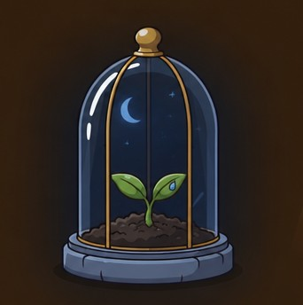
Quiet hoursDrawn live in code, not a painting, so it can move: the plant lifts as if breathing, the lamp glows, gold motes rise, a gold seam shimmers. It grows with time given back (5 m, 15 m, 1 h, 3 h, 8 h, 24 h), the same stages on all three. Only adult content touches the glass: stopped cracks it, Breathe seals it in gold, through breaks it. Total time back is never wiped.
Native parts, per phone
Android: Material 3 switches in gold, outlined segmented buttons, a navigation bar with an indicator pill, an extended button for New rule, sheets from the bottom edge. iPhone: green switches, filled segments, a floating glass tab bar with Breathe as its own circle, the + in the title bar, inset glass sheets.
Shape, space, motion
18 px from the screen edge, 9 between rows, 22 above a section. Screens rise 10 px as they come in. The Breathe flower opens over 4 s and closes over 4 s. With Reduce Motion on, all of it stops.
One engine and one wood, on three devices
The rule book is the same on every device: a rule closes, limits or pauses a set of apps, sites or feeds, at set hours, Gentle, Firm or Locked. What each system lets an app see and do is not the same, so this is where each part comes from.
One set of trees for all three apps
The same twelve painted trees on Android, iPhone and Mac, the way the glass paintings are already shared. Each has one meaning everywhere. They are exported and named for each app in design/unrot-trees-kit-2026-11-24; nothing in the apps uses them yet.
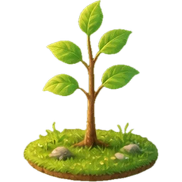
SaplingToday, under the glass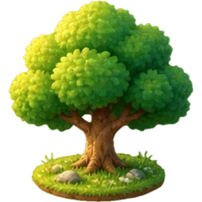
OakA clean day, from day 1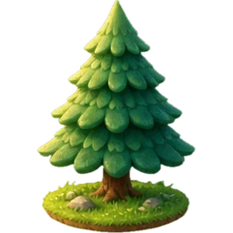
Pine7 clean days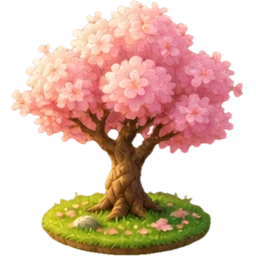
Cherry14 clean days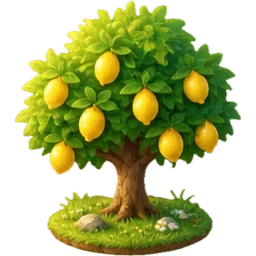
Lemon21 clean days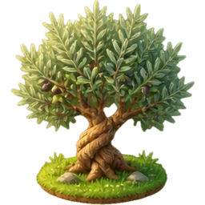
Olive30 clean days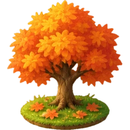
Maple45 clean days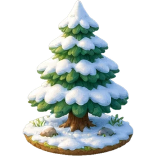
Snow pinePines in winter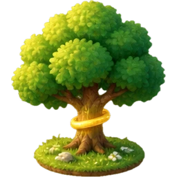
Gold ringStopped, sealed with gold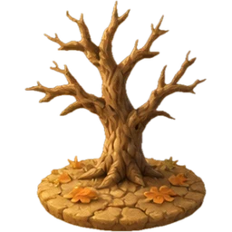
Dry treeA day it got through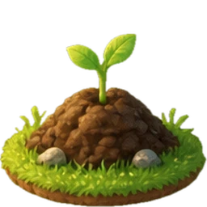
SoilA dry tree, 7 clean days on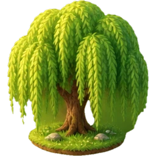
WillowGrows from that soilAndroid and iPhone
Today: the sapling under the glass, full size. Progress: the wood on the hill, the seed box, a sheet for each day. Lock screen and widget: today's plant and time given back.
Mac
The same sapling under the same glass at the bottom of the sidebar, where the painting sits today. The Progress page gets the same wood, wider: a whole month fits on one hill. The menu bar shows the time, not a tree.
The same rules everywhere
A clean day plants a tree, sized by time given back. A sealed crack leaves a gold ring. A day it got through is a dry tree that turns to soil and grows a willow. The wood is kept on each device; nothing about adult content leaves it.
| Part | Android | iPhone | Mac |
|---|---|---|---|
| Knowing which app is open | Accessibility service: sees the app and the screen inside it, so it can close just Shorts or Reels. | Screen Time (Family Controls): Apple shields the whole app; Unrot never learns which apps were picked. | NSWorkspace: a glass panel over the app's own window. |
| Feeds only | Yes, in the apps: YouTube home and Shorts, Reels, Explore, For you. | Safari only, through the web extension. In apps, the whole app or nothing. | In the browser, through the extension (bridge built, extension side to do). |
| Wait before opening | Full-screen count over the app (Open Wait). | Apple's shield screen can't count, so it sends you to Unrot for the wait, then lifts the shield for the minutes you chose. | Panel over the window with a count. |
| Feed time | Usage access: real minutes per app. | 40 thresholds on the chosen apps; the highest reached each day. | Own usage ledger per rule. |
| Adult sites and words | Private DNS / local VPN filter, words in apps, face blur, private tabs closed. | Safari content blocker, device-wide DNS filter, SafeSearch. | Network filter, browser guard, extension. |
| Glass cracks by itself | Yes: Unrot closed the page, so it knows. | No: iPhone never tells an app a page was blocked, so a crack or a break is your own report. | Yes, from the filter. |
| The plant and the wood | Shared painted trees; the wood on Progress. To build. | The same trees and wood. To build. | The same trees; plant in the sidebar, wood on Progress. To build. |
| Hard to remove | Device admin, lock until a date, a guardian's code. | Passcode vault: Unrot shows a Screen Time passcode, then hides it; or a supervised profile. | Lock schedule, managed mode. |
| Outside the app | Widget, ongoing Focus notification, one-minute warning. | Lock Screen widgets, Live Activity for Focus, one-minute warning. | Menu bar, notch Focus, warning notice. |
What this prototype does not prove
- It is drawn, not captured. Unlike the Mac prototype, these phones are drawn in HTML from the code and the design notes. They show where the apps should go, not a screenshot of today's build.
- The rule list is new on phones. Android already has Open Wait, feed closing, Focus and quiet hours as separate tools; iPhone has a feed rule, Focus and quiet hours. Bringing them into one Mac-style rule book (Now · Upcoming · Ideas, Gentle / Firm / Locked, never-closed sites, the weekly emergency pass) is the work this proposes.
- Home is short on purpose. One picture, one number, one line about adult content, four tools, Help under the thumb. The rules have their own tab. Home changes from today's app. The phones today show the full-screen Glasshouse scene; here the glass stays large at the top of Today with adult protection right under it, and the rule list is added below. Every Home feature keeps a place (check in, notes, instead, had a hard moment, today's three).
- The art is painted, the motion is code. The trees, the hill and the glass in its six states are paintings. They breathe, sway and glow through code; nothing is animated by hand yet.
- English only. Arabic strings come later, as the Mac does.